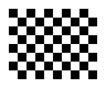

Print A4 landscape, 100% / actual size, no headers or footers. Board: 10 × 8 squares, each 18 mm; keep the white border. Attach flat to a rigid board. Do not stretch the print. Use the same board for all captures.
Back to calibrationYou can also open this page on a computer connected to a printer.
